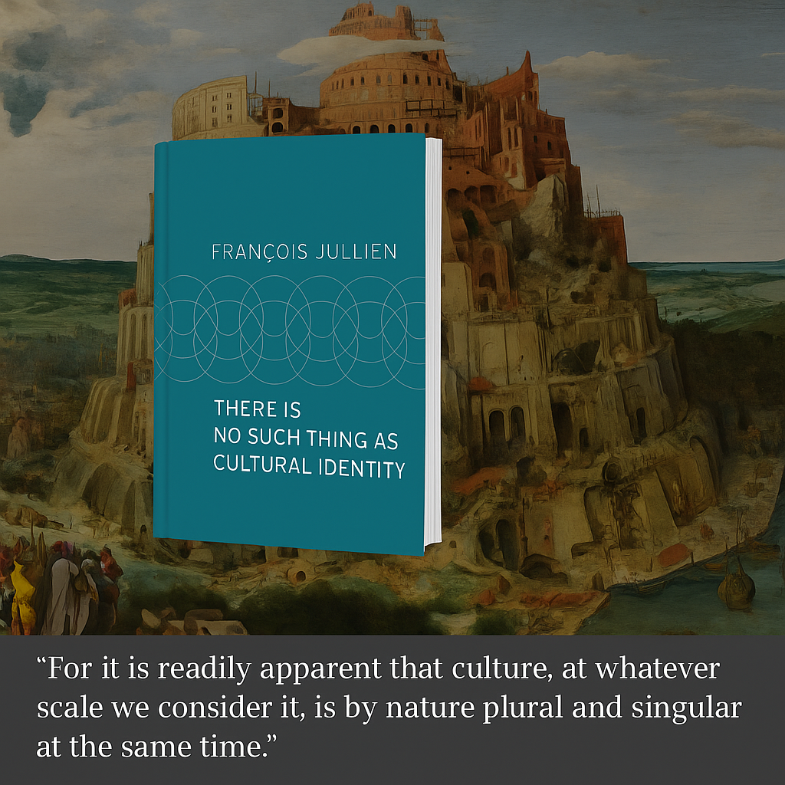
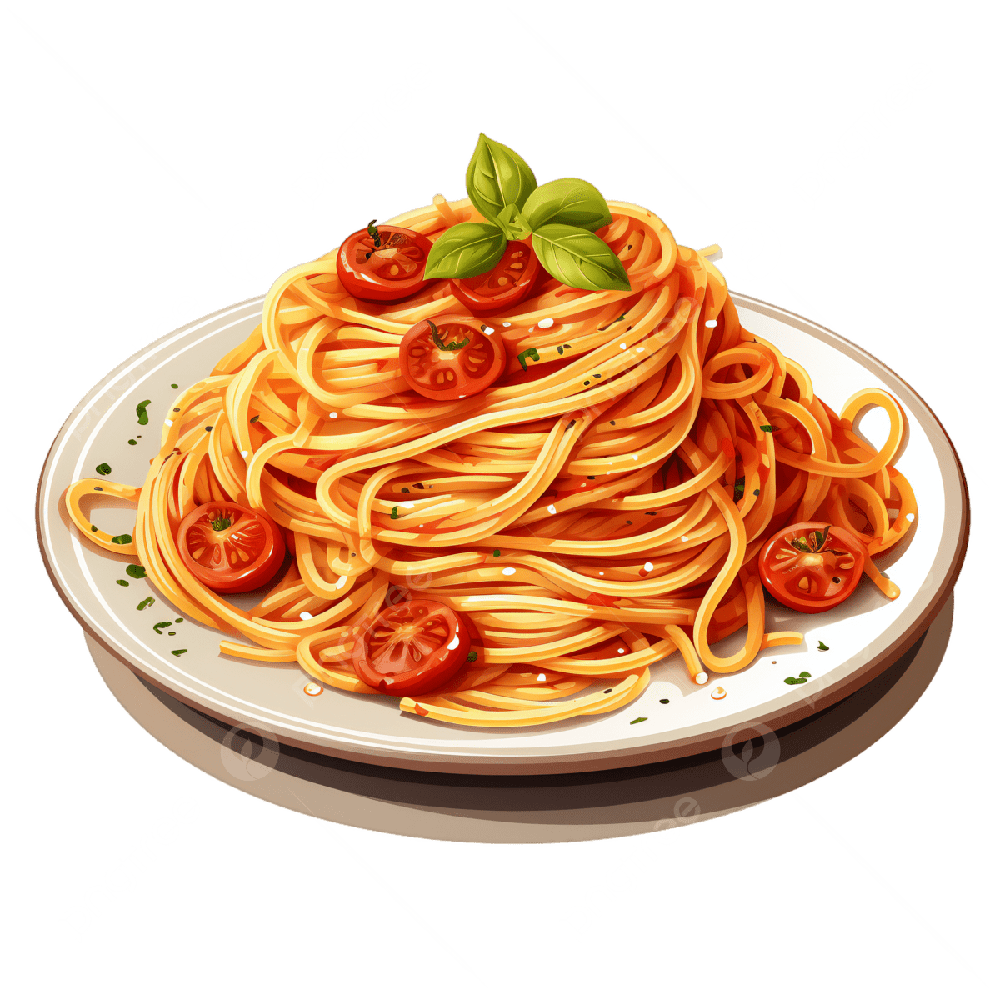

There is no such thing as cultural identity
Tom Mafille
Introduction

- Title: There Is No Such Thing as Cultural Identity (2013)
- Author: François Jullien
- Publication Date: 2013
Context
François Jullien is a French philosopher and sinologist, exploring how Chinese thought challenges Western concepts.
Main question
Does “cultural identity” really exist, or is it a misleading concept?
Aim
Understand why Jullien rejects the idea of fixed identities
and what he proposes instead: a culture in motion and
transformation.
Around the text: thesis
There Is No Such Thing as Cultural Identity
How to define culture?
Answer: through differences

\Rightarrow Dead end

Humanity
Individuals
\Rightarrow What is in common?
X ? “Common ground”? “Human nature”?
Ideology: no evidence
Culture
The essence of culture: the plural + the singular
Humanity → Individuals
Culture
Fixed cultural identity = does not exist
Culture is in motion, otherwise dead (a dead language).
\Rightarrow Ex. The French culture:
The French culture
La Fontaine ?

Rimbaud ?
René Descartes ? André Breton ?
\Rightarrow What defines it? Who?
Culture and creativity
What seems “exceptional” → is what is most creative
The gap between norms and exceptions = the true resource of culture
The danger of “identity”
Approaching cultures as fixed identities = politically dangerous
History shows the risks of this misconception
Example: Huntington
The Clash of Civilisations (1996)
- Cultures reduced to types: “Chinese”, “Islamic”, “Western”
- Fixed differences → fixed identities
- Leads inevitably to conflict (“clash”)
\Rightarrow No attention to internal diversity \Rightarrow Cultures reduced to clichés
Internal diversity
Culture lives through its internal tensions (“heterotopias”)
No “hard core” of a culture, but constant mutation
Example: Europe
Attempt to define European identity → failure
- Christian roots?
- Or secular Enlightenment?
No agreement → no Constitution
Europe’s strength
Europe = both Christian and secular
Strength lies in the gap:
- Faith ↔︎ Reason
- Religion ↔︎ Enlightenment
This tension creates Europe’s richness
Arguments For / Against
Arguments For (fixed identity)
- Creates belonging and social cohesion
- Gives individuals pride and continuity
- Simplifies intercultural understanding (shared codes)
Arguments Against (Jullien)
- Freezes culture into stereotypes
- Hides internal diversity and creativity
- Leads to ideological or political misuse
Conclusion
- No fixed cultural identity
- Culture = movement and transformation
- Richness lies in tensions and differences
- Identity-based thinking = reduction and risk
“Culture only exists through its transformations, not its essence.”
— François Jullien
\Rightarrow Culture exists in the in-between
Discussion
- Is it possible to preserve diversity without “cultural
identities”?
- Do you agree that fixed identity is politically dangerous?
- Can globalization destroy or enrich cultures?
- What does “being European” mean today?